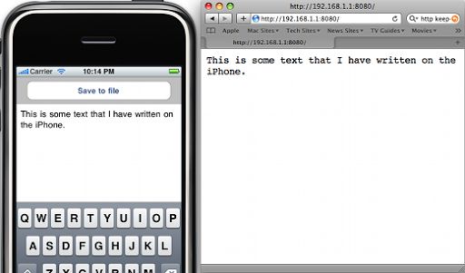

Please note: this article is part of the older "Objective-C era" on Cocoa with Love. I don't keep these articles up-to-date; please be wary of broken code or potentially out-of-date information. Read "A new era for Cocoa with Love" for more.
A simple, extensible HTTP server in Cocoa
HTTP is one of the simpler protocols to implement for communication between computers. On the iPhone, since there are no APIs for data synchronization or file sharing, embedding an HTTP server is one of the best ways to transfer data from your iPhone application to a computer. In this post I'll show you how to write your own simple but extensible HTTP server. The server classes will also work on Mac OS X (Cocoa un-Touched).
Introduction
In this post I will present the following sample application:
The application is very simple: you can edit text and save it to a file (it is always saved to the same file).
While the application is running, it also runs an HTTP server on port 8080. If the path "/" is requested, it will return the content of the saved file. All other requests return a 501 error.
To transfer the text file from the iPhone application, just enter the IP address of the phone followed by ":8080" in any web browser.
HTTPServer and HTTPResponseHandler classes
The approach I use for an HTTP server involves two classes: the server (which listens for connections and reads data up to the end of the HTTP header) and the response handler (which sends the response and may choose to read from the connection past the header).
The key design choice for me was simplicity of each new response implementation: the server and response classes are designed so that a new response implementation need only implement three methods:
canHandleRequest:method:url:headerFields:— to decide if the implementation can handle a specific requeststartResponse— to begin writing (or completely write) the responseload— all subclasses should implement the standard+[NSObject load]method to register themselves with the base class
It is just a tiny HTTP server but the approach should allow you to quickly integrate HTTP communications into any application.
Opening a socket for listening
Most server communications, HTTP included, begin by creating a socket for listening.
Sockets in Cocoa can be created and configured entirely using the BSD sockets code but it's often marginally easier to use the CoreFoundation CFSocket API where possible. Unfortunately, that only makes it marginally easier — we still have a large block of boilerplate code to throw down just to open a socket.
From the -[HTTPServer start] method:
socket = CFSocketCreate(kCFAllocatorDefault, PF_INET, SOCK_STREAM,
IPPROTO_TCP, 0, NULL, NULL);
if (!socket)
{
[self errorWithName:@"Unable to create socket."];
return;
}
int reuse = true;
int fileDescriptor = CFSocketGetNative(socket);
if (setsockopt(fileDescriptor, SOL_SOCKET, SO_REUSEADDR,
(void *)&reuse, sizeof(int)) != 0)
{
[self errorWithName:@"Unable to set socket options."];
return;
}
struct sockaddr_in address;
memset(&address, 0, sizeof(address));
address.sin_len = sizeof(address);
address.sin_family = AF_INET;
address.sin_addr.s_addr = htonl(INADDR_ANY);
address.sin_port = htons(HTTP_SERVER_PORT);
CFDataRef addressData =
CFDataCreate(NULL, (const UInt8 *)&address, sizeof(address));
[(id)addressData autorelease];
if (CFSocketSetAddress(socket, addressData) != kCFSocketSuccess)
{
[self errorWithName:@"Unable to bind socket to address."];
return;
}This is a large block of code but it's really only doing one thing: opening a socket to listen for TCP connections on the port specified by HTTP_SERVER_PORT (which is 8080 for this application).
There is some additional work because I like to specify SO_REUSEADDR. This lets us reclaim the port if it is open but idle (a common occurrence if we restart the program immediately after a crash or killing the application).
Receiving incoming connections
After the socket is setup, Cocoa handles a little more of the work so things get easier.
We can receive each incoming connection by constructing an NSFileHandle from the fileDescriptor above and listening for connection notifications
From the -[HTTPServer start:] method (immediately below the previous code):
listeningHandle = [[NSFileHandle alloc]
initWithFileDescriptor:fileDescriptor
closeOnDealloc:YES];
[[NSNotificationCenter defaultCenter]
addObserver:self
selector:@selector(receiveIncomingConnectionNotification:)
name:NSFileHandleConnectionAcceptedNotification
object:nil];
[listeningHandle acceptConnectionInBackgroundAndNotify];When receiveIncomingConnectionNotification: is invoked, each new incoming connection will get its own NSFileHandle. If you're keeping track, that was:
- 1 file handle (
listeningHandle) manually created from the socketfileDesriptorto listen on the socket for new connections. - 1 file handle automatically created for each new connection received through
listeningHandle. We'll continue to listen to these new handles (the keys in theincomingRequestsdictionary) to record the data for each connection.
So, now that we've received a new, automatically created file handle, we create a CFHTTPMessageRef (which will store the incoming data) we receive over the file handle. We store these as the objects in incomingRequests dictionary to allow easy access to the CFHTTPMessageRef for each file handle
The CFHTTPMessageRef is both storage and the parser for the incoming data. We can invoke CFHTTPMessageIsHeaderComplete() every time we add data to check when the HTTP headers are complete and we can spawn a response handler.
The response handler is spawned in the -[HTTPServer receiveIncomingDataNotification:] method:
if(CFHTTPMessageIsHeaderComplete(incomingRequest))
{
HTTPResponseHandler *handler =
[HTTPResponseHandler
handlerForRequest:incomingRequest
fileHandle:incomingFileHandle
server:self];
[responseHandlers addObject:handler];
[self stopReceivingForFileHandle:incomingFileHandle close:NO];
[handler startResponse];
return;
}The server stops listening to the file handle for the connection at this point but it doesn't close it, since the file handle is passed to the HTTPResponseHandler so that the HTTP response can be sent back over the same file handle.
Flexible response handling
Exactly which subclass the +[HTTPResponseHandler handlerForRequest:fileHandle:server:] method chooses to return determines the entire content of the response. It does this by iterating over a priority ordered array of the registered handlers and asking each one if it wants to handle the request.
+ (Class)handlerClassForRequest:(CFHTTPMessageRef)aRequest
method:(NSString *)requestMethod
url:(NSURL *)requestURL
headerFields:(NSDictionary *)requestHeaderFields
{
for (Class handlerClass in registeredHandlers)
{
if ([handlerClass canHandleRequest:aRequest
method:requestMethod
url:requestURL
headerFields:requestHeaderFields])
{
return handlerClass;
}
}
return nil;
}For this to work, all HTTPResponseHandlers need to be registered with the base class. The easiest way to do this is to add an implementation of the +[NSObject load] method to every subclass:
+ (void)load
{
[HTTPResponseHandler registerHandler:self];
}In the sample application, the only response handler other than the default is the AppTextFileResponse. This class chooses to handle the response when the requestURL is equal to "/".
From the AppTextFileResponse class:
+ (BOOL)canHandleRequest:(CFHTTPMessageRef)aRequest
method:(NSString *)requestMethod
url:(NSURL *)requestURL
headerFields:(NSDictionary *)requestHeaderFields
{
if ([requestURL.path isEqualToString:@"/"])
{
return YES;
}
return NO;
}AppTextFileResponse then handles the entire response synchronously (before returning from the startResponse method) by writing the text file saved by the application as the response body.
- (void)startResponse
{
NSData *fileData =
[NSData dataWithContentsOfFile:[AppTextFileResponse pathForFile]];
CFHTTPMessageRef response =
CFHTTPMessageCreateResponse(
kCFAllocatorDefault, 200, NULL, kCFHTTPVersion1_1);
CFHTTPMessageSetHeaderFieldValue(
response, (CFStringRef)@"Content-Type", (CFStringRef)@"text/plain");
CFHTTPMessageSetHeaderFieldValue(
response, (CFStringRef)@"Connection", (CFStringRef)@"close");
CFHTTPMessageSetHeaderFieldValue(
response,
(CFStringRef)@"Content-Length",
(CFStringRef)[NSString stringWithFormat:@"%ld", [fileData length]]);
CFDataRef headerData = CFHTTPMessageCopySerializedMessage(response);
@try
{
[fileHandle writeData:(NSData *)headerData];
[fileHandle writeData:fileData];
}
@catch (NSException *exception)
{
// Ignore the exception, it normally just means the client
// closed the connection from the other end.
}
@finally
{
CFRelease(headerData);
[server closeHandler:self];
}
}The [server closeHandler:self]; invocation tells the server to remove this HTTPResponseHandler from the set of active handlers. The server will invoke endReponse when it removes this handler (which is where we close the connection — since this handler does not support keep-alive).
Work not implemented
The biggest task not handled in this implementation is parsing the HTTP request body.
The reason for this is that a general HTTP body solution is very complicated. The body's size may be specified by the Content-Length header but it need not be — so knowing where the body ends can be difficult. The body may also be encoded in one of about a dozen different Transfer-Encodings, including chunk, quoted-printable, base64, gzip — each of which require different processing.
However, I have never needed to implement a generic solution. It is normally easiest to determine what is needed for your specific needs and handle the HTTP body in accordance with those needs. You can handle the request body by overriding -[HTTPRequestHandler receiveIncomingDataNotification:]. The default implementation ignores all data it receives after the HTTP request headers.
Data handling note: the first time the-[HTTPRequestHandler receiveIncomingDataNotification:]method is called, the initial bytes of the HTTP body will already have been read from thefileHandleand appended to therequestinstance variable. If you need to read the body, either continue reading into therequestobject, or remember to include this initial data.
Another task not handled are Keep-Alive connections. These also need to be handled in -[HTTPRequestHandler receiveIncomingDataNotification:] and I've left a big comment on the method about what would be involved. The reality is that it's probably easier to set the Connection header field to close for every response to tell the client that you're not going to handle Keep-Alive (see the startResponse code sample above for an example).
The HTTPReseponseHandler priority does not take the requested Content-Type into account. If this is an important consideration for you, you might want to change how +[HTTPResponseHandler handlerClassForRequest:method:url:headerFields:] selects its handler.
Finally, this server does not handle SSL/TLS. It is intended for local network transfers where the network itself is relatively secure. If you are transferring over the open internet and want a secure connection, there's a lot to change and manage at the socket level. You could try it yourself but if security is really important, you probably shouldn't risk writing your own server — if you can arrange it, use a mature, TLS-enabled HTTP server and only handle the client-side in your application. Client-side security in Cocoa is very easy — it is automatic and transparent in CFReadStream and NSURLConnection.
Conclusion
Download the sample app TextTransfer.zip (45kB) which includes theHTTPServerandHTTPResponseHandlerclasses.
Just because mainstream HTTP servers are large, complex pieces of software, doesn't mean an HTTP server is necessarily large and complex — the core implementation here is only two classes, yet is flexible and configurable.
Of course, the end result is not intended for use as a complete web server solution, however it should work well as a small communications portal into your custom iPhone or Mac applications.
HashValue: an object for holding MD5 and SHA hashes
Temporary files and folders in Cocoa